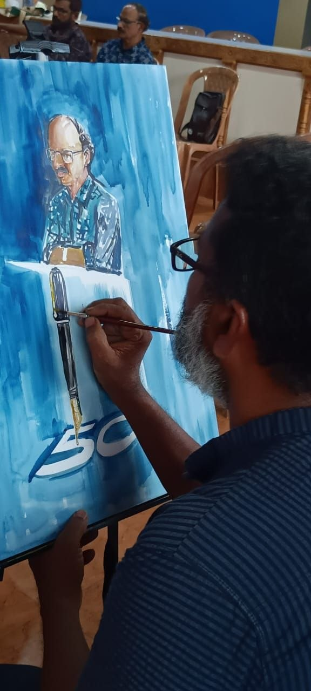
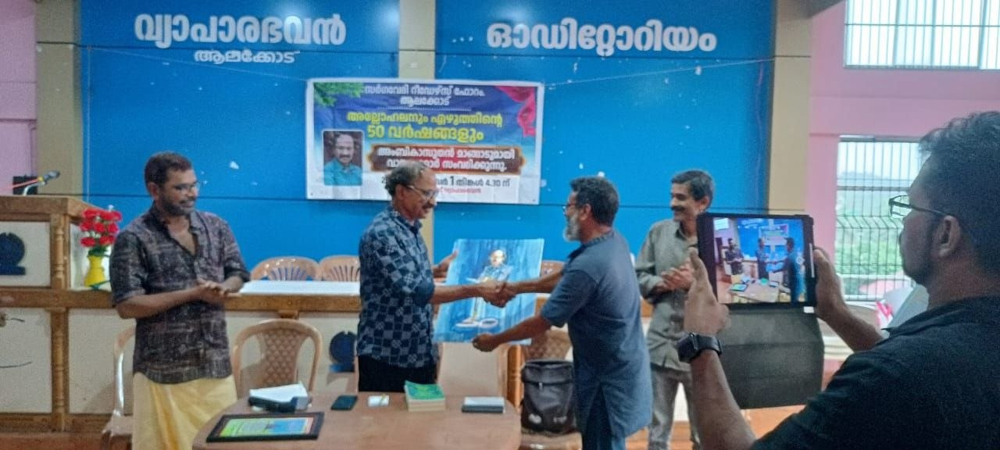
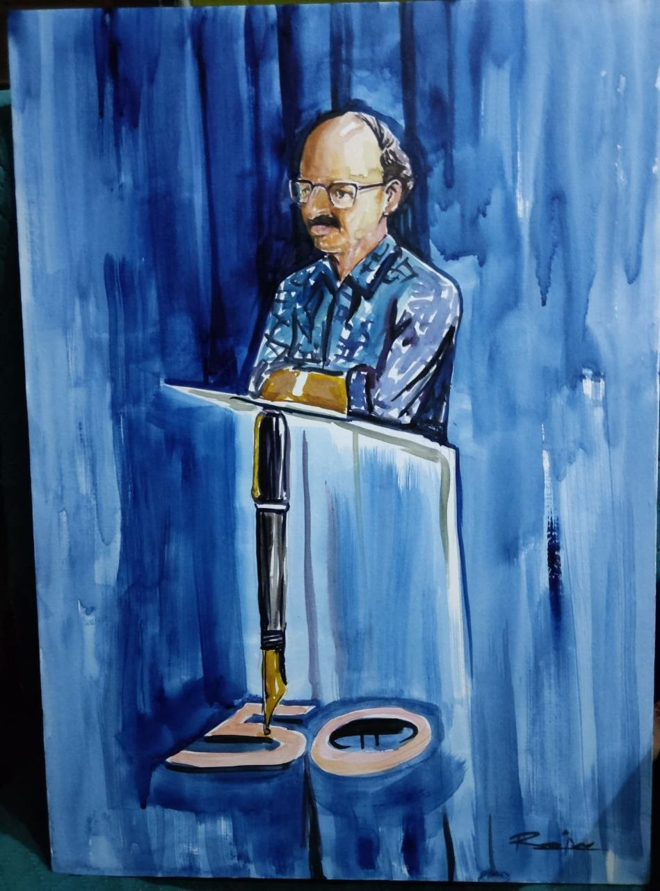
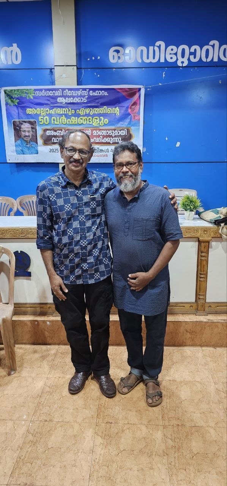
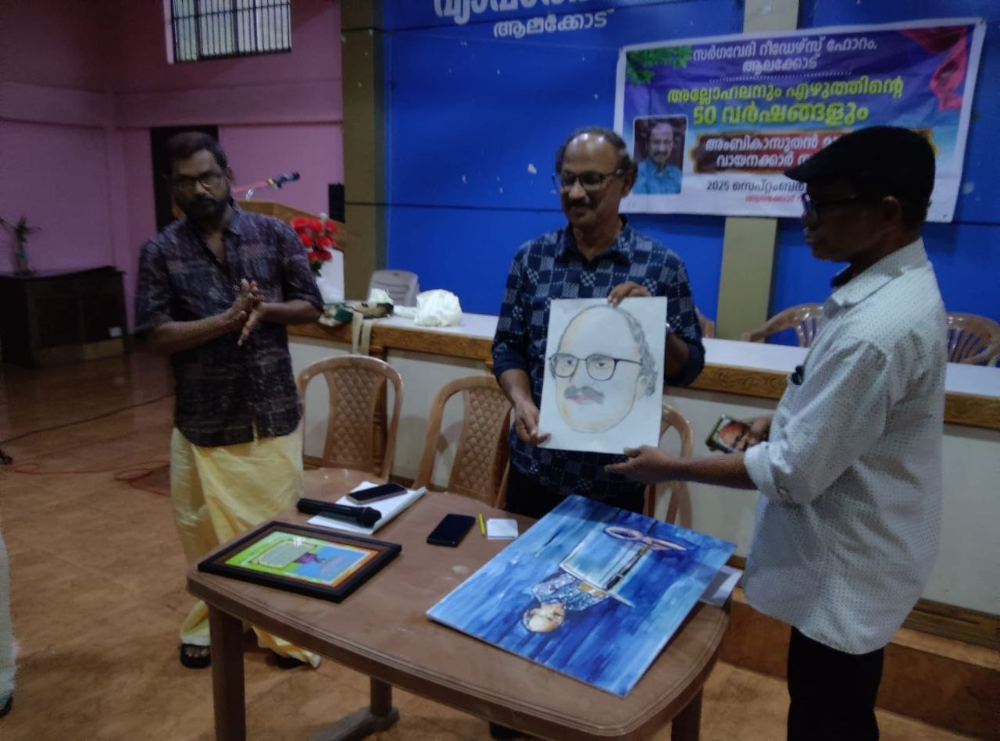

തികച്ചും നല്ലൊരു പരിപാടി ആയിരുന്നു ഇന്ന് സർഗവേദി റീഡേഴ്സ് ഫോറം സംഘടിപ്പിച്ചത്. വ്യക്തിപരമായി വലിയ സന്തോഷം തോന്നിയ പരിപാടിയും. നേരത്തേ എത്തണമെന്ന് കരുതിയെങ്കിലും എഴുതി തയ്യാറാക്കിയ കുറിപ്പ് ഒരു 3.30 യ്ക്ക് ടൈം വെച്ച് വായിച്ച് നോക്കിയപ്പം 15 മിനിറ്റ് വരുന്നുണ്ട് കുറിപ്പ്. പിന്നെ കുറിപ്പ് ചുരുക്കൽ കാരണം സമയം വൈകി.
എന്തെങ്കിലും വിശദമാക്കി എഴുതുന്നതിനേക്കാൾ പണിയാണ് ആശയം നഷ്ട്ടമാകാതെ ചുരുക്കി എഴുതൽ എന്ന് ഇന്ന് ബോധ്യപ്പെട്ടു. അതുകൊണ്ട് മാഷ്ടെ അമ്പത് വർഷത്തെ സാഹിത്യ ജീവിതം എന്ന വിഷയത്തെ കഥകളെ കുറിച്ച് മാത്രമുള്ള കുറിപ്പാക്കി ചുരുക്കി ആലക്കോട് എത്തുമ്പം പരിപാടി തുടങ്ങിയിരുന്നു. പ്രസാദ് മാഷ് എന്നോട് മുമ്പോട്ട് ഇരിക്കാൻ ആഗ്യഭാഷയിൽ ക്ഷണിച്ചെങ്കിലും പിറകിൽ ഇരുന്നു. [സമയം വൈകി എത്തിയതിൻ്റെ ചമ്മലാണ് പിറകിൽ ഇരുന്നതിൻ്റെ പ്രേരണ].
എൻ്റെ സമയം എത്തിയപ്പോ എഴുതിയത് ഒന്നും ശരിയായില്ല എന്ന ചമ്മലോടെ മൈക്കിനടുത്ത് എത്തി.
പാതി എഴുതിയതും കുറച്ച് മനസ്സിൽ ഉള്ളതും വേറെ കുറച്ച് ഗൂഗിൾ തന്നതുമൊക്കെ വെച്ച് ഒരു വിധം ഒപ്പിച്ചു പറഞ്ഞു.
എൻ്റെ പറയൽ കഴിയും വരെ നടന്നതും കേട്ടതുമൊന്നും ശ്രദ്ധിക്കാൻ എൻ്റെ ടെൻഷൻ എന്നെ അനുവദിച്ചിരുന്നില്ല.
എങ്ങനെയോ തട്ടി കൂട്ടി പറഞ്ഞ കാര്യങ്ങൾ ആയിട്ടും എൻ്റെ നിരീക്ഷണങ്ങൾക്ക് അംബികാസുതൻ മാഷിൽ നിന്നും അംഗീകാരം കിട്ടിയത് വലിയ സന്തോഷമായി മാറി.
ചർച്ചകളും പാട്ടുകളും ഒക്കെ പരിപാടിയെ ഗംഭീരമാക്കി...
വന്നത് ഒട്ടും നഷ്ട്ടമായില്ല എന്ന തോന്നൽ ഉള്ളവായത് അംബികാസുതൻ മാഷ്ടെ മറുപടി പ്രസംഗം കേട്ടപ്പോൾ ആണ്. എൻഡോസൾഫാൻ ദുരന്ത ബാധിതരുടെ ജീവിതത്തെ കഥയായി അല്ലാതെ ജീവിതമായി തന്നെ മാഷ് പറയുമ്പോ ശരിക്കും എന്തെല്ലാമോ വികാര വിചാരങ്ങൾ ഉള്ളിൽ വന്ന് തൊട്ടു. പെട്ടെന്ന് തീരുമാനിക്കപ്പെട്ട പരിപാടി ആയിട്ടും നല്ലൊരു സദസ് ഒരുക്കിയെടുത്ത പ്രസാദ് മാഷടക്കം ഉള്ള ഏവർക്കും സ്നേഹവും അഭിനന്ദനങ്ങളും...
രാജുവേട്ടൻ്റെയും മുരളിയേട്ടൻ്റെയും വരകൾ പരിപാടിയെ കൂടുതൽ മിഴിവുള്ളതാക്കി.
ഇന്നത്തെ പരിപാടി സർഗ്ഗ വേദി റീഡേഴ്സ് ഫോറത്തിന്റെ മറ്റെല്ലാ പരിപാടികൾക്കൊപ്പം തന്നെ നിൽക്കുന്ന, ഒരുപക്ഷേ ഒരുപടി മേലെ നിൽക്കുന്ന എന്ന് വേണമെങ്കിൽ പറയാം... കാരണം അംബികാസുതൻ മാഷിന്റെ 50 വർഷത്തെ എഴുത്തിനെപ്പറ്റി സമഗ്രമായി സംസാരിച്ചുകൊണ്ട് ആൽബി ൻ മാഷ് സ്വതസിദ്ധമായ പുഞ്ചിരിയോടെയും ശൈലിയിലും അവതരിപ്പിച്ചപ്പോൾ ജോസഫ് മാഷ്, ചിറ്റടി മാഷ് എന്നിവർ അല്ലോ ഹലൻ വായന അനുഭവം പങ്കിട്ടു. തുടർന്ന് അംബിക സുതൻ മാഷോട് ചോദിക്കണമെന്ന് ആഗ്രഹിച് മനസ്സിൽ ചോദ്യങ്ങൾ തയ്യാറായി വന്ന എല്ലാവർക്കും തന്നെ ആവശ്യത്തിന് സമയം എടുത്തു കൊണ്ട് തന്നെ മാഷുമായി സംവദിക്കാനും സാധിച്ചു... കുറച്ചു പേരെങ്കിലും മാഷുമായി പേഴ്സണലായി ആശങ്കകളും വായന അനുഭവങ്ങളും പങ്കുവയ്ക്കുന്നുമുണ്ടായിരുന്നു. (പരിപാടിക്ക് മുമ്പും പിമ്പും...) തൽസമയം മാഷിന്റെ ചിത്രങ്ങൾ വരച്ചതും നല്ലൊരു അനുഭവമായി.. എൻമകജെ അനുഭവങ്ങൾ മാഷ് പങ്കുവെക്കുമ്പോൾ സാഹിത്യകാരന്മാർക്ക് സമൂഹത്തിൽ ഇത്രമാത്രം ഇടപെടലുകൾ നടത്താം എന്നും അനുഭവത്തിലൂടെ നമുക്ക് വ്യക്തമാക്കി തന്നു. ഓരോ പരിപാടി നടത്തുമ്പോഴും പ്രസാദ് മാഷിന്റെയും സർഗ്ഗ വേദി റീഡേഴ്സ് ഫോറം മെമ്പർമാരുടെയും പിറകിലുള്ള അധ്വാനം... അത് ആലക്കോടി ന്റെ സാമൂഹിക സാംസ്കാരിക മാറ്റത്തിലേക്ക് ഓരോരോ ചുവടുകളാണ് എന്നും, തുടർന്നും ഇത്തരം പ്രവർത്തനങ്ങൾക്കുള്ള ഊർജ്ജവും ഉത്സാഹവും എന്നും ഉണ്ടാകട്ടെ എന്നും ആശംസിച്ചുകൊണ്ട് നിർത്തുന്നു 🙏🏻🙏🏻
ഇന്നത്തെ പരിപാടി സ൦ഘാടന൦ കൊണ്ടു൦ ആശയ സ൦പുഷ്ടതകൊണ്ടു൦ മികച്ചതായിരുന്നു. വിഷയ൦ അവതരിപ്പിച്ച എല്ലാവരു൦ സമയനിഷ്ഠ പാലിച്ചുകൊണ്ടുതന്നെ ഒന്നാ൦തരമായി കാര്യങ്ങൾ പറഞ്ഞു. ചിത്രങ്ങൾ വരച്ചവരുടെ മികവ് എടുത്തുപറയേണ്ടതാണ്. അ൪ഹിക്കുന്ന രീതിയിലുള്ള ഒരു ആദരവ് തന്നെയാണ് നാ൦ അ൦ബികാസുത൯ മാഷിന് നൽകിയത്.
ഇന്നലത്തെ പ്രോഗ്രാമിന്റെ ക്ലൈമാക്സ് അത് പറഞ്ഞറിയിക്കുന്നതിലും അപ്പുറമാണ്. ഒട്ടുമിക്ക ആളുകളുടെയും കണ്ണുകൾ ഈറനണിയുന്നത് കണ്ടു. ശരിക്കും പിടിച്ചിരുത്തിയ നിമിഷങ്ങൾ. സഖാവ് വി എസ്സിനെ മാഷ് ഓർത്തെടുത്ത നിമിഷങ്ങളിൽ ഞാൻ അറിയാതെ എഴുന്നേറ്റു നിന്നു മുദ്രാവാക്യം വിളിക്കാതിരിക്കാൻ എന്നെ ഞാൻ തന്നെ ഒരുപാട് പാടുപെട്ടു നിയന്ത്രിച്ചു. ഏന്മകജെ മാഷിന് വെറും ടോപ്പിക്കല്ല, നേർ ജീവിതങ്ങളുടെ അനുഭവങ്ങളാണെന്നുള്ള കാര്യങ്ങൾ ആരെയും മിഴികൾ ഈറനണിയിക്കുന്നതാണ്. ഇന്നലത്തെ പ്രോഗ്രാം 👍




